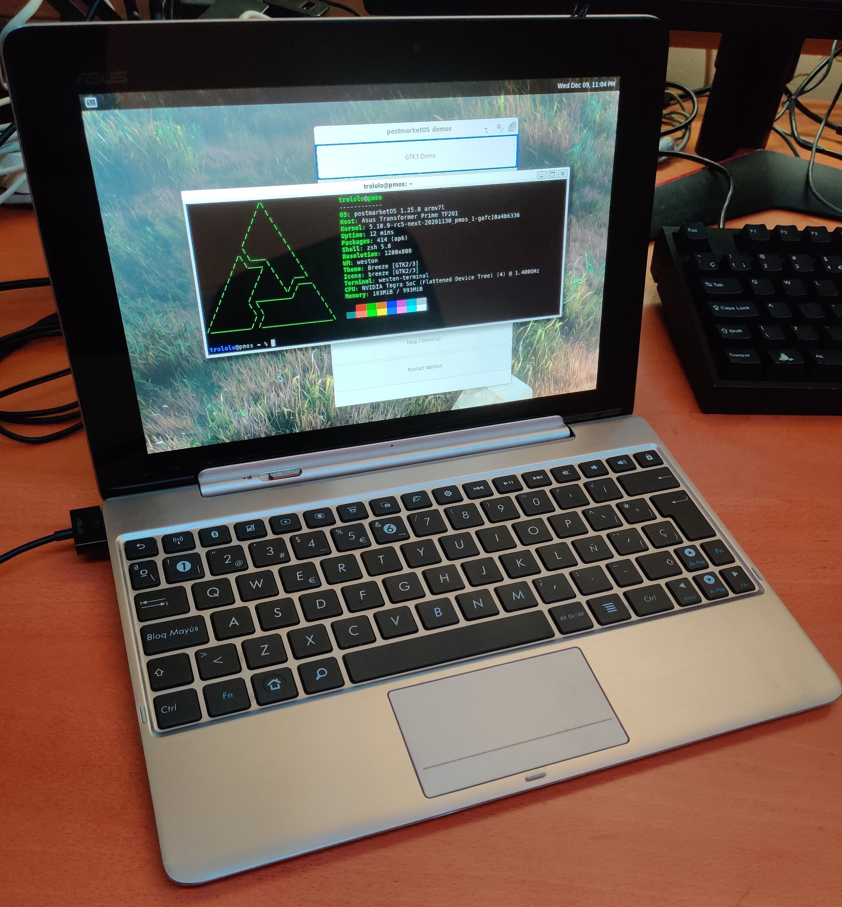

ASUS Transformer Prime (asus-tf201)
|  | |
| Manufacturer | ASUS |
|---|---|
| Name | Eee Pad Transformer Prime |
| Codename | asus-tf201 |
| Released | 2011 |
| Category | testing |
| Original software | Android |
| Original version | 3.2 |
| Extended version | 4.1 |
| postmarketOS kernel | mainline grate |
| Hardware | |
| Chipset | Nvidia Tegra 3 (T30) |
| CPU | Quad-core 1.4 GHz Cortex-A9 |
| GPU | NVIDIA ULP GeForce GPU 12 cores |
| Display | 1280x800 Super IPS+ LCD |
| Storage | 32/64 GB |
| Memory | 1 GB |
| Architecture | armv7 |
| Unixbench Whet/Dhry score | 1279.1 |
| USB Networking |
Works
|
|---|---|
| Flashing |
Works
|
| Touchscreen |
Works
|
| Display |
Works
|
| WiFi |
Works
|
| FDE |
Works
|
| Mainline |
Works
|
| Battery |
Works
|
| 3D Acceleration |
Partial
|
| Audio |
Works
|
| Bluetooth |
Works
|
| Camera |
Broken
|
| GPS |
Broken
|
| Mobile data |
Unavailable
|
| SMS |
Unavailable
|
| Calls |
Unavailable
|
| USB OTG |
Unavailable
|
| NFC |
Unavailable
|
| Accelerometer |
Works
|
|---|---|
| Magnetometer |
Works
|
| Ambient Light |
Works
|
| Proximity |
Unavailable
|
| Hall Effect |
Works
|
| Barometer |
Unavailable
|
| Power Sensor |
Unavailable
|
| Camera Flash |
Unavailable
|
|---|---|
| Keyboard |
Works
|
| Touchpad |
Works
|
| USB-A |
Works
|
| HDMI/DP |
Works
|
| Ir TX |
Unavailable
|
| Ir RX |
Unavailable
|
| Stylus |
Unavailable
|
| Haptics |
Works
|
| Ethernet |
Unavailable
|
| FOSS bootloader |
Works
|
| Primary Bootloader |
Works
|
|---|---|
| Secondary Bootloader |
Works
|
| Mainline |
Works
|
| Internal Storage |
Works
|
| SD card |
Works
|
| USB Host |
Works
|
| USB Peripheral |
Works
|
| Display |
Works
|
| Keyboard |
Broken
|
| Buttons |
Works
|
|
This device is based on the Tegra 3. See the SoC page for common tips, guides and troubleshooting steps |
Contributors
- Clamor
- Ion Agorria
Users owning this device
- Clamor (Notes: pmOS with Grate kernel and U-Boot)
- IonAgorria (Notes: PMOS Mainline - OK)
- Jja2000
- LongnoseRob (Notes: pmOS with Grate kernel and U-Boot)
Unlocking
The first step to do anything with the device is unlocking, with this device its done by sideloading the unlock apk from ASUS and clicking a few buttons in the app. The apk can be found on the ASUS support page.
Bootloader unlock fails with Unknown error
Contact ASUS tech support, describe the issue and provide them with information they'll request. Bootloader unlock may become available within 1-2 days after the request.
Kernel status
Android kernel
- 3.1 kernel based on ASUS sources with updates till Oreo support (Morpheus kernel)
- 3.4 kernel as a part of Unlegacy Android Project (Unlegacy kernel)
Mainline (Grate)
- Baseline kernel sources on master: https://github.com/grate-driver/linux
- Proper dts for TF201 is added
- Version: 6.1.0-stable
- Status: Boots. Almost full support.
Installation
How to enter flash modes
Turn tablet off if it is in the system. Then press POWER and VOL DOWN buttons till you feel the vibration. Then release the POWER only. You will enter the bootloader/fastboot. In bootloader you can navigate with VOL DOWN button and to choose option use VOL UP button.
Bootloader version
Latest bootloader for TF201 was 10.4.2.18 and to use pmOS you need bootloader version of 10.6.1.27.5 to reach this you can use flashable via TWRP bootloader packages.
Installation process
| The bootloader doesn't handle flashing the boot and userdata partition correctly, the official firmware package flashes an "Android blob" to the staging partition with fastboot which triggers an flashing screen on the tablet which copies the data to the correct partitions. pmbootstrap has tools to pack and flash kernel correctly, no worries! |
Preparing rootfs and flashing kernel:
$ pmbootstrap init
$ pmbootstrap install
$ pmbootstrap flasher flash_kernel
Flashing rootfs to eMMC
| WARNING: Preferable way of installing pmOS is installing on microSD card! |
| This may change size of your data partition. You can fix it by resizing partition in TWRP before flashing Android. |
You should proceed very carefully here.
Rootfs should be flashed to the /userdata partition.
Prerequisites: TWRP, at least version 3.3.1-0, binaries for 10.6.1.27.5 bootloader are here.
First, start TWRP (go to bootloader and choose RCK) and then continue with these instructions
$ pmbootstrap export
$ adb shell umount /dev/block/mmcblk0p8
$ adb push /tmp/postmarketOS-export/asus-tf201.img /dev/block/mmcblk0p8
Hardware status (mainline)
| Status | Hardware | Info |
|---|---|---|
| Y | Booting | boot.img has restriction of approx 8MB, which is /boot partition size. |
| Y | Bootloader | Open source bootloader U-Boot is available as alternative for stock Asus bootloader and can replace it. U-Boot can not boot downstream kernel due to TrustZone problem. |
| Y | Panel | HannStar HSD101PWW2 Rev0-A00/A01 LCD SuperIPS+ HD panel through LVDS controller. |
| Y | HDMI output | HDMI works, but max output is 1080p due to Tegra 3 limitations. |
| Y | Touchscreen | Used Atmel MXT768E touchscreen. |
| Y | USB | One full size USB 2.0 in dock or via 40 pin adapter. |
| Y | SD cards | MicroSD card and full sized SD card (recognized as USB drive) in dock. |
| Y | Internal memory | eMMC by Kingston KE4BT5D6A or Hynix H26M64002BNR. |
| N | GPS | Broadcom GPS BCM4751 is used. Device itself has weak signal. |
| Y | GPS | U-Blox 6 in GPS Extension Kit (see below) |
| Y | WiFi | Uses Azurewave AW-NH615 BCM4329. Wi-Fi should work out of the box (best with IWD daemon: apk add iwd; rc-update del wpa_supplicant; rc-update add iwd;). All needed stuff is included. Device may not connect to some networks (in my case it was PC hotspot, to fix this, I have installed IWD on my PC as well). Be aware that WiFi MAC address is not static, though it should not matter for average user. |
| Y | Bluetooth | Uses Azurewave AW-NH615 BCM4329B1. Works fine out of the box. |
| Y | GPIO keys/switches | There are 3 GPIO keys: Power, Volume up, Volume down.
And 2 GPIO switches: LID sensor and Audio dock line-out detection. |
| Y | Vibro | Transformer Prime has GPIO based vibrator. Available via sysfs. |
| Y | Dock Keyboard | Both pad and dock have Nuvoton NPCE795LA0BX embedded controller which handles battery data, charging, leds, keyboard and touchpad. Driver of this EC is mainlined and is fully functional. Keyboard and Touchpad work.
Alt Gr can be used for alternate multimedia keys instead of escape, fn keys, volumes and delete. Alt GR + Lock changes the default key mode. |
| Y | Battery/Charger | Driver is based on Texas Instruments bq24725 SMBus Charge Controller driver and GPIO charger but works through pad/dock EC. Charging and charge level of both batteries are shown correctly. |
| Y | PMIC | Transformers use Texas Instruments TPS659110 PMIC and TPS62361 core regulator. |
| Y | Sound | Sound codec is RT5631. Sound works but UCM are not upstreamed yet. Audio via HDMI works out of the box. |
| Y | Voice processor | Transformers use separate Fortemedia FM34NE voice processor. Mainline driver prototype is available but is set into constant bypass mode. Requires rework to fit Linux sound system. |
| Y | Thermal sensor | NCT1008 ON Semiconductor LM90 series thermometer. |
| Y | Orientation sensors | Include Invensense mpu3050 gyroscope with Kionix KXTF9 accelerometer and Aichi AMI306 3-axis digital compass. |
| Y | Light sensor | Driver Dyna-Image AL3010. Brightness regulation works, install iio-sensor-proxy . It's slightly oversensitive. |
| N | Front camera | Aptina mi1040 camera sensor. Grate kernel doesn't support VI yet. |
| N | Rear camera | Fujitsu MBG048 image processor. Since it is broken on most TF201 is not planned to be added to support list. If you have such a need, development is welcome. Mainline driver doesn't exist. |
| P | ULP GeForce | GPU Acceleration partially works. |
Participate development
U-Boot
- legacy android boot.img stuck when loaded via u-boot (u-boot can not establish TrustZone)
Kernel
- emmc vio voltage is 3.3v when proper should be 1.8v (setting 1.8v brakes emmc); MicroSD vdd supply is always on and MicroSD frequency is limited - all 3 are ASUS bootloader bugs, u-boot does not have this bugs;
- BCM4751 GPS is commonly used in devices of this age, although it still does not have proper implementation (nor kernel, nor userspace);
Userspace
- add missing indicators for multimedia keys like for brightness
- bind /prop touchpad toggle to userspace indication
Usability
Desktop environment
Since 3D acceleration is not available yet, all DE which use it will be painfully slow and laggy.
Currently xfce4 or mate are recommended.
U-Boot
| WARNING: This part is HIGHLY EXPERIMENTAL! DO NOT USE THIS IF YOU DO NOT KNOW WHAT YOU ARE DOING. |
| Further procedure needs pre-made nvflash. Files blob.bin and bricksave.img are only thing that will save you from full brick and allow replace/restore Asus bootloader. |
Current U-Boot status on Asus Transformer Prime TF201
| Status | Feature | Info |
|---|---|---|
| Y | Primary bootloader | U-Boot successfully boots when is flashed into EBT partition instead of Asus bootloader. Can be additionally booted via fusée gelée exploit, even in locked state. |
| Y | Secondary bootloader | U-Boot can be chainloaded from both /boot and /recovery partitions. |
| Y | Panel | LVDS panels over DC connection are fully supported. Rudimentary bridge support is present. When chainloaded primary bootloader's panel setup can be reused (simple framebuffer). |
| Y | MicroSD | Fully functional and detectable. Can be used as boot source. Can be mounted from U-Boot. |
| Y | eMMC | Fully functional and detectable. Can be used as boot source. Can be mounted from U-Boot. |
| Y | Boot kernel | Yes, and can be highly adjusted with extlinux.conf. |
| Y | Boot menu | Native u-boot bootmenu works perfectly fine. It can be called with pressing volume down button on boot. |
| Y | Power management | Offline charging and charging in u-boot both work and are hw configured. Both power off and reboot options work and are available in bootmenu. If no valid kernel is found or lid-sensor is active (docked and closed) tablet will turn off. |
| Y | Fastboot | Fastboot option is available in bootmenu. All functions operate correctly. |
| Y | Bricksafe hook (legacy) | U-Boot can successfully generate and restore device specific image of first 3 encrypted partitions. It is identical to one, generated with nvflash command. If you can not perform nvflash, use fusée gelée to launch u-boot from RAM and generate bricksafe. You need to insert blank fat microSD so it can be saved! |
| P | Boot Android | Booting Android kernel can be performed only same way mainline kernel boots. Additionally it must not have CONFIG_TRUSTED_FOUNDATIONS = y and some additional small patches, it can be booted by u-boot. |
| Y | Self update | Self update option is implemented and write is done correctly. Re-crypt is required to be able to self update. Bootloader file has to have name u-boot-dtb-tegra.bin and be placed on 1st partition of microSD. |
Primary, you need to build a u-boot from this source (github) on master branch and transformer_t30_defconfig tf201.config. Use same GCC as for kernel. When build is finished, you will get a file with name u-boot-dtb-tegra.bin. This is new bootloader.
Place u-boot-dtb-tegra.bin into your nvflash folder. Set your device into APX mode and perform
$ sudo ./wheelie --blob blob.bin
$ sudo ./nvflash --resume --download EBT u-boot-dtb-tegra.bin
And wait till tablet reboots.
If you need to restore Asus bootloader, you can find one in stock firmware blob and flash it with same method.
USB Extension Kit
As there are signal issues due to the design of the TF201 back-shell, ASUS supplied a GPS Extension Kit for use at the dock-port.
(TODO: add picture)
Inside the GPS ExtensionKit is u-blox 6 usb-gps receiver, wich is well supported by gpsd.
If connected it will show up as /dev/ttyACM0 (typically), dmesg output:
usb 1-1: new full-speed USB device number 11 using ci_hdrc
usb 1-1: New USB device found, idVendor=1546, idProduct=01a6, bcdDevice= 7.03
usb 1-1: New USB device strings: Mfr=1, Product=2, SerialNumber=0
usb 1-1: Product: u-blox 6 - GPS Receiver
usb 1-1: Manufacturer: u-blox AG - www.u-blox.com
cdc_acm 1-1:1.0: ttyACM0: USB ACM device
To automatically update gpsd on the u-blox receiver availability, create a new .rules file unde r/etc/udev/rules.d:
#### Udev rules for the ASUS TF201 GPS Extension Kit
ACTION=="add", KERNEL=="ttyACM*" SUBSYSTEMS=="usb" ATTRS{idVendor}=="1546" ATTRS{idProduct}=="01a6" RUN+= "/usr/sbin/gpsdctl add /dev/%k"
ACTION=="remove", KERNEL=="ttyACM*" SUBSYSTEMS=="usb" ATTRS{idVendor}=="1546" ATTRS{idProduct}=="01a6" RUN+= "/usr/sbin/gpsdctl remove /dev/%k"
Serial console
Asus Transformers have serial port both on motherboard and in 40 pin connector.
MOTHERBOARD

On motherboard serial console can be organized via J0801 according to enclosed scheme. UART is UART-A (serial@70006000; 115200n8) and uses 3.3v. This method requires disassembling tablet.
UART CABLE
Serial console can be additionally made from standard charging cable, but in process cable will be destroyed.
You would need:
- Asus charging cable;
- UART to USB (like CP2102);
- 3 wires with pin plugs on end;
- Soldering iron, a bit of skill;

First of all you need to cut both ends of charging cable and prepare any 3 of cable wires for further soldering on both sides. Then solder your wires with pin plugs to prepared wires of Asus cable on ONE SIDE.
Now we need to prepare 40 pin plug. It's cover is solid, but there is a plastic rubber around metal plug, it needs to be cut, then metal plug can be carefully extracted. Controller board is covered with black silicon, it needs to be teared as well. Then you need to unsolder ground (black wire), it holds board to metal plug. After board can be unsoldered or gently pulled and it will come out with pins. Then you have to remove all remaining pins, find where 6 and 7 pins are on shorter side (!) and make their holes a bit bigger (holes from board side!). Insert pins from board(I've inserted mine with 90°, they insert easier and work fine; additionally you may try straightened stapler clip). Now you can solder wires on other side of Asus cable to pins and to metal connector. Additionally, I have fixed pins with super glue, before fixing pins check is they reach almost end of its groove.
6th pin is RX of device and 7th pin is TX of device, GND is on metal connector.
Connect RX (6th pin wire) to TX of CP2102, TX (7th pin wire) to RX of CP2102 and GND to GND respectively. Plug your USB adapter, configure it and you are ready to take UART logs.


{kind=link}
See also
- Asus Transformer device family on Tegra 3 includes also Transformer Pad TF300T and Transformer Pad Infinity TF700T
- Katkiss android ROM XDA link
- How to get your tf201 to katkiss XDA link
- More about the device Wikipedia entry
- pmaports!1803 MR to add signed blobs as required by tf201 fastboot